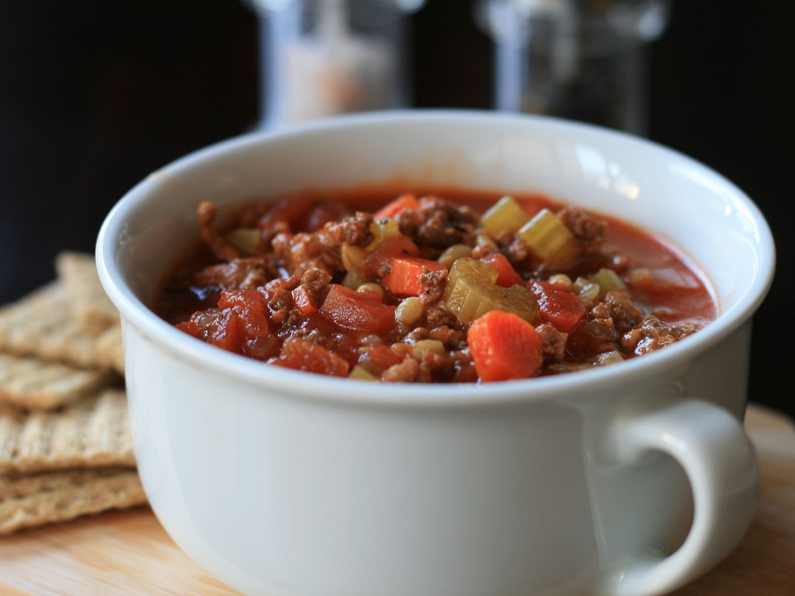

Hamburger Soup

Ingredients
- 1 ½ pounds ground beef
- 1 medium onion, finely chopped
- 1 bay leaf
Steps
- Turn on a multi-functional pressure cooker and add all the ingredients.
- Close and lock the lid. Select Soup function; set timer for 30 minutes. Allow 10 to 15 minutes for pressure to build.
- Eat the food.